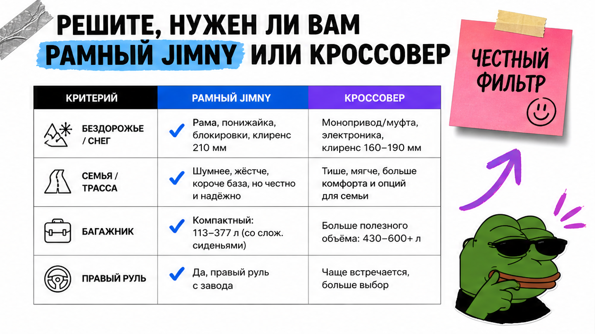
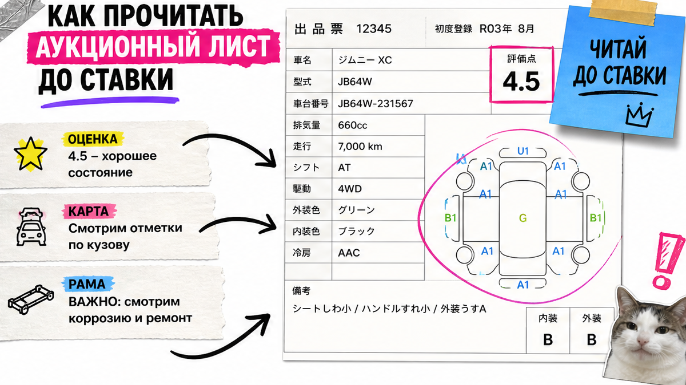

Хотите Suzuki Jimny с аукциона Японии, но уже боитесь перепутать kei, Sierra и 5 дверей, не понимаете оценку листа и рискуете дать депозит по красивым фото без осмотра рамы? Ставка – это не лайк в объявлении. Ниже – как сверить код кузова, прочитать карту листа и пройти чеклист из 10 пунктов до денег, без калькулятора пошлин вслепую и без оплаты "на картинку".
TL;DR / Быстрый инсайт: Сначала выберите ветку кузова по коду (JB64/JB23 kei, JB74 Sierra 3дв, JC74 Nomade 5дв), потом читайте лист: оценка → история ремонта → пробег → карта A/U/W/C/X. Для Jimny критичны C/S по низу и фото рамы. Пройдите чеклист из 10 пунктов и только потом идите за расчётом под ключ.
В первом квартале 2026 Jimny стабильно в топе б/у импорта из Японии: рамный компакт с правым рулём везут часто. На практике новичок видит яркий "Jimny Sierra" у посредника и уже готов платить, а в листе оказывается Nomade JC74 или старый kei JB23 с оценкой 3.5 и пометками коррозии. Типичная ошибка – путать Sierra и 5 дверей: у Suzuki Japan это разные модели с 2025 года.
Мы в Авто-Сейлс во Владивостоке разбираем такие лоты до ставки. Форм на странице нет: подбор и расчёт живут в каталоге и переписке. Цель статьи – чтобы вы сегодня отличили "тот" кузов и остановили плохой лот без команды экспертов рядом.

Jimny – короткий рамный внедорожник, не семейный кроссовер "на каждый день и трассу". Если нужны дача, снег, лесные колеи и компактный размер в городе – ветка Jimny логична. Если приоритет – дети, багажник на неделю и трасса 1000 км – чаще выгоднее обычный кроссовер. Честно говоря, лучше отказаться от Jimny до ставки, чем жалеть о тесном салоне после прихода во Владивосток.
Например, 3-дверный Sierra с багажником около 59 л при четырёх пассажирах тесен для семьи. 5-дверный Nomade даёт около 211 л – уже ближе к "можно жить", но это всё ещё рамник с характером, не мягкий паркетник. Проверьте сценарий поездок до поиска лота: один честный ответ экономит недели переписки.
Сделайте: запишите сценарий в одном предложении – город / дача / бездорожье / семья. Не делайте: заказывать Jimny только потому, что "красиво на фото" и "все везут из Японии".
До поиска лота зафиксируйте ветку. Код кузова важнее маркетингового названия в чате.
| Ветка | Код кузова | Двери / мотор | Как не перепутать |
|---|---|---|---|
| Kei Jimny | JB64 (новее), JB23 (старше) | 3 двери, ~0.66 л | Уже "квадратный" Jimny, но не Sierra 1.5 |
| Sierra | JB74 / JB74W | 3 двери, K15B ~1.5 л | Не 5 дверей; багажник маленький |
| Nomade | JC74 / JC74W | 5 дверей, K15B ~1.5 л | Линейка с апреля 2025; база длиннее Sierra на 340 мм |
В карточке лота сверьте год, КПП (механика в спросе), 4WD и комплектацию (XC/JL/JC/FC, Safety Support). Сделайте: выпишите желаемый код до ставки. Не делайте: соглашаться на "сиерра 5 дверей" – такой модели у Suzuki Japan нет.

Аукционный лист – это "медкарта" машины: оценка, пробег, схема повреждений и примечания. Читайте по порядку, а не с красивых фото.
Workflow чтения листа:
Общая оценка (S/6/5/4.5/4/3.5) → Есть ли R/RA и 修復歴 → Пробег и пометки одометра → Карта кузова (A/U/W/C/X) → Примечания → Фото и доп. видео
Сделайте: пройдите этот порядок на одном реальном листе сегодня. Не делайте: решать по оценке "4.5" без карты низа.
Главная бытовая боль Jimny – коррозия: арки, пол багажника, зоны за фарами, крепления кузова к раме (body mounts). До ставки требуйте фото днища и рамы. Если в лоте lift-up (лифт подвески) без крупных фото низа – риск спрятать ржавчину выше. В реальном проекте подбора мы чаще стопорим лот из-за низа, чем из-за царапины на двери.
Правый руль для японского аукциона – норма. Если нужен левый – это другой канал, не "тот же Jimny с аукциона". Мощность и утиль: зафиксируйте двигатель (0.66 vs 1.5) и год, но не считайте пошлину сами по чужим постам – суммы плавают. Добавьте в заметку "двигатель + год" и уйдите за свежим расчётом, а не за скрином из чужого чата.
Сделайте: запросите фото рамы, арок, пола багажника и body mounts до депозита. Не делайте: оплачивать лот только по студийным ракурсам кузова.
Избегайте лотов, где оценка низкая, а продавец давит срочностью. Используйте перевод листа или подборщика во Владивостоке, если сами не читаете японские пометки.
Критерий успеха простой: перед ставкой все пункты закрыты "да" или осознанным "принимаю риск". Пока есть "не смотрел" – депозит рано.
Сделайте: распечатайте или сохраните чеклист и отметьте пункты по конкретному лоту. Не делайте: переходить к оплате с пустыми пунктами "потом посмотрим".
Как понять, что готовы к ставке: код кузова сверен, оценка и карта прочитаны, красные флаги (R/RA, C/S по днищу, lift-up без фото рамы) отмечены, есть следующий шаг – расчёт под ключ. Если пункта не хватает – сначала доберите факты, не деньги.
Когда ветка кузова и лист понятны, передайте вводные: модель, год, двигатель, КПП. Актуальные лоты и расчёты – в каталоге Авто-Сейлс. Вопросы по конкретному листу – в Telegram avtosales125.
Офис во Владивостоке, Днепровская 40а стр. 4 – хаб логистики: СВХ, таможня, выдача и перегон. Форм на блоге нет. Уберите из головы идею "сам посчитаю утиль по таблице из чата" – ориентир только свежий расчёт под ваш лот.
Нужен подбор без оплаты вслепую – начните с каталога avto-sales125.ru и короткого списка лотов под ваш сценарий.
Материал проверен: Редакция Авто-Сейлс – эксперты по авто под заказ из Японии, Кореи и Китая (Владивосток).
Достоверность данных: факты сверены с материалами Suzuki Japan (линейка Sierra JB74 / Nomade JC74), гайдами аукционных листов (Towa, AntaresJP, Japan Vehicle Data), community BigJimny по ржавчине рамы и сигналами Автостата / RBC Autonews по импорту б/у из Японии на 2026; актуальные расчёты под ключ – только в каталоге.
В быту "Jimny" часто называют всю линейку. На японском рынке Sierra (JB74) – это 3-дверный 1.5, а kei Jimny (JB64/JB23) – отдельная малолитражная ветка ~0.66. Сделайте ставку только после сверки кода кузова в листе, не по слову "Sierra" в рекламе.
Да, смотрите Nomade с кодом JC74 (линейка с апреля 2025). Не ищите "Sierra 5 дверей" – такого кода у Suzuki Japan нет. Проверьте лист и запросите расчёт под ключ до депозита.
Запросите фото днища, рамы, body mounts, арок и пола багажника. На карте листа ловите C и S по низу. При lift-up без крупных фото днища – стоп или доп. осмотр.
Если нужны семья, трасса и большой багажник каждый день – чаще берите кроссовер. Jimny имеет смысл при реальном off-road / даче / снеге и готовности к правому рулю и компактному салону.
R/RA указывают на историю ремонта. Не отбрасывайте лот автоматически и не берите без разбора: откройте карту силовых зон и примечания. Нет ясности – не ставьте, отдайте лист на разбор.
Соберите код кузова, год, мотор и КПП, затем откройте каталог Авто-Сейлс или напишите в Telegram avtosales125. Не опирайтесь на чужие суммы пошлин из постов – нужен расчёт под ваш лот.